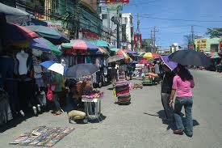
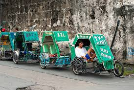
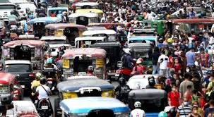

Ang impormal na sektor ay bahagi ng ekonomiya na walang pormal o kulang sa mga dokumentong kailangan sa pagsasagawa ng gawaing pang-ekonomiya.
Ang kita ng sektor na ito ay hindi naisasama sa kabuuang Gross Domestic Product (GDP) ng bansa. Kilala rin ito bilang Underground Economy.
Ito ay paraan ng mga mamamayan upang magkaroon ng kabuhayan o dagdag kita lalo na sa panahon ng pangangailangan.

Nagtitinda sa kalsada
Pedicab driver
Hindi rehistradong pampublikong sasakyan